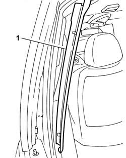
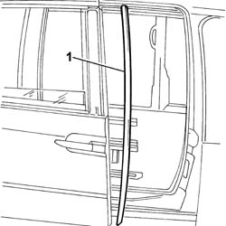

7020C18 SLIDING DOOR SEAL - R+R
- Path
- Procedures > 70 FITTINGS > 7020 LOAD COMPARTMENT DOORS > 7020C SLIDING SIDE DOOR > 7020C18 SLIDING DOOR SEAL - R+R
- Kind
- repair procedure (removal / refitting; the operation number is the code)
- Applies to
- all engines; all production periods
- Interactive page
- https://sloeber94.github.io/elrnDB-fUlss/en/#/179007706
Applies to: all engines; all production periods
 Removing
Removing
 Refitting
Refitting1. Release the pillar cover from the retaining springs and remove it.

Applies to: all engines; all production periods
Op. 7020C54 SLIDING SIDE DOOR DESCENDING WINDOW GLASS CHANNEL. - R.& R.
1. Release the front seal from its housing and remove it.

Applies to: all engines; all production periods
Refitting
Removing- Fit the front seal in the housing in the rear side door.
Op. 7020C54 SLIDING SIDE DOOR DESCENDING WINDOW GLASS CHANNEL. - R.& R.
- Fit the front pillar trim.
- Attach the front pillar fastening clips.